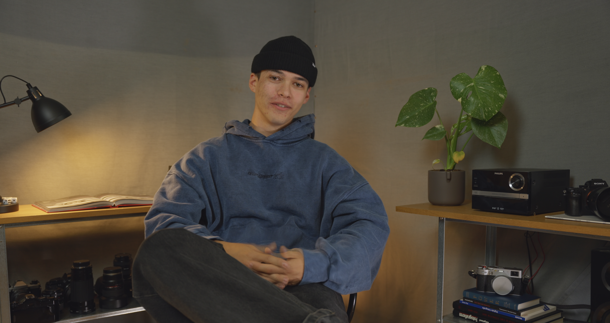

Ein Videoporträt über einen Mitstudenten und Freund – entstanden im Kurs Kreativlabor.
Das Videoporträt entstand im Kurs Kreativlabor an der Hochschule Furtwangen. Porträtiert habe ich Phillip, einen Mitstudenten und Freund.
Gedreht und geschnitten habe ich das Video selbst. Der Schnitt entstand in DaVinci Resolve, die Tonbearbeitung in REAPER.